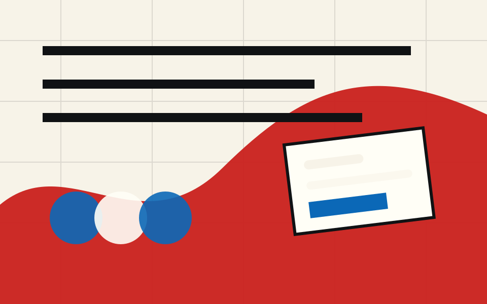
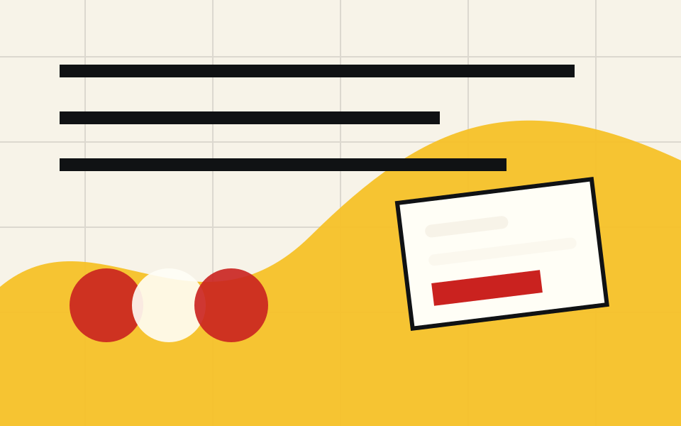
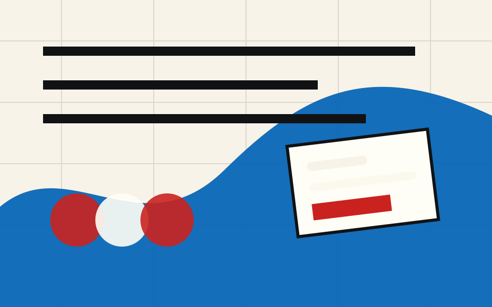
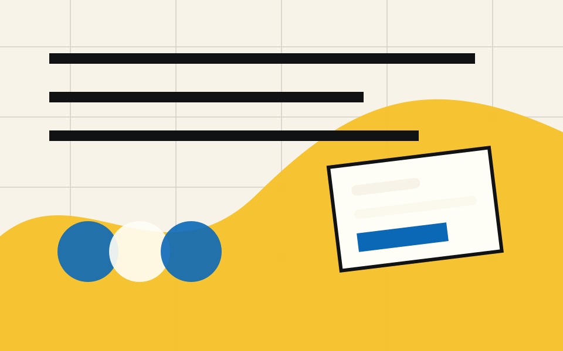

A local field guide for the twt workflow
Find the right twt skill for the job.
Explore the marketplace by phase, see what every command expects, and understand what each one leaves behind.
Pick the part of the pipeline you are working in.

GeneralCross-cutting helpers for setup, full-pipeline orchestration, exports, docs, status checks, and search.
 Pre-design
Pre-design
Shape the raw project signal into a practical brief: intake, content, brand, positioning, IA, and curation.

DesignTurn the brief into a design spine: tokens, component behavior, layouts, mockups, and design-system checks.

DevelopPromote approved design into build targets: static HTML, Elementor widgets, themes, and implementation passes.

QAAudit the built work for accessibility, content fidelity, links, responsive risks, and design-token hygiene.